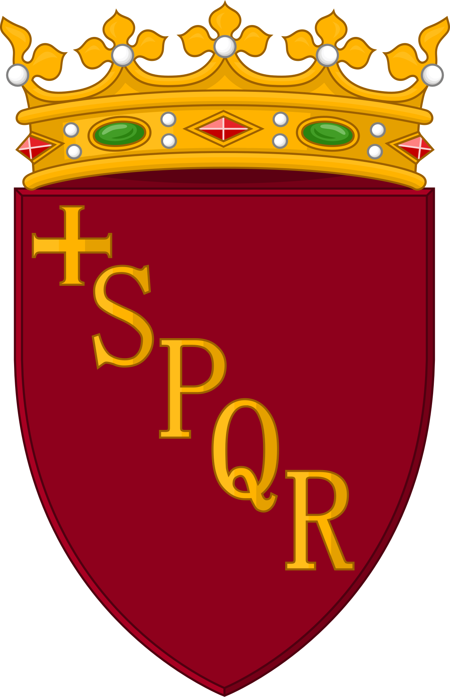

Julia is Rome's GenAI-powered tourist assistant, designed to help residents and visitors navigate city services and information. Available 24/7, Julia provides instant answers to questions about municipal services, transportation, cultural events, and more. By leveraging certified knowledge bases and multiple access channels, Julia makes interacting with the city more accessible and efficient for everyone.
Travelers often seek personalized and engaging interactions that make them feel understood and valued. They may have specific preferences and might experience a range of emotions, from excitement and curiosity to stress and confusion, especially in unfamiliar environments. The client aims to introduce a digital human that can offer tourists a personalized travel experience, not only by delivering information, but doing so in a way that empathizes with users and understands their unique needs and preferences.
A GenAI-based agent which can provide useful information and advice on touristic attractions, events, restaurants, shopping, accommodation and more. This agent has a well-defined behavior and uses a specific language register tailored to the target audience of the solution. Moreover, it can adapt its conversation and behaviors based on the mood of the interlocutor through emotion recognition.
Phase 2 introduces several key enhancements across three strategic areas:

ROMA CAPITALE